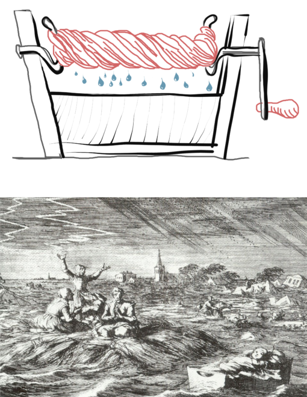

2 서문 (Preface)

이 책 제목에 있는 _현대_라는 두 가지 사례는 생물학적 데이터 분석에 있어서 최근의 두 가지 주요 혁명을 반영합니다.
이전에는 희박한 과학이었던 생물학은 정량적 데이터 생산이 고에너지 물리학이나 천문학과 동등하고 데이터가 훨씬 더 이질적이고 복잡해지는 분야로 변했습니다.
20세기에 확률 이론과 미적분학의 응용 기반이 되었던 통계 분야는 종종 표기법으로 가르치고 가설 검정에 중점을 두고 인식되었으며, 컴퓨터와 기계가 읽을 수 있는 형식의 데이터가 보편화되면서 변형되었습니다. 탐색적 데이터 분석, 시각화, 리샘플링, 시뮬레이션, 베이지안 아이디어의 실용적인 혼합 및 빈도주의 데이터 분석 방법이 도구 세트의 일부가 되었습니다.
이 책의 목적은 생물학 연구에 종사하는 과학자들이 실험과 기타 이용 가능한 데이터를 최대한 활용하는 데 필요한 많은 중요한 아이디어와 방법을 빠르게 배울 수 있도록 하는 것입니다. 이 책은 실무적인 접근 방식을 취합니다. 내러티브는 질문 클래스나 특정 데이터 유형에 따라 결정됩니다. 방법과 이론은 알아야 할 필요에 따라 소개됩니다. 우리는 첫 번째 원리로부터 체계적으로 추론하려고 노력하지 않습니다. 이 책은 종종 독자들을 수영장에 빠뜨리고 너무 많은 세부 사항이 누락되었음에도 불구하고 수영할 수 있기를 바랍니다.
이 책은 확률, 선형 대수학, 미적분학, 컴퓨터 과학, 데이터베이스, 다변량 통계 등 기본 이론에 대한 체계적인 교육을 결코 대체하지 않습니다. 이러한 훈련에는 여러 학기의 교과 과정이 필요합니다. 아마도 이 책은 이러한 분야 중 하나에 더 깊이 관여하고 싶은 욕구를 자극할 것입니다.
모든 생물학적 시스템이나 유기체는 수만 개의 구성 요소로 구성되며, 이는 서로 다른 상태에 있을 수 있고 다양한 방식으로 상호 작용할 수 있습니다. 현대 생물학은 다중 공변량 및 상호작용을 통해 시간적, 공간적 맥락에서 포괄적인(이는 고차원적) 데이터를 획득함으로써 그러한 시스템을 이해하는 것을 목표로 합니다. 이러한 복잡성을 처리하는 것이 우리의 주요 과제가 될 것입니다. 여기에는 항상 불완전한 도구를 사용하여 얻을 수 있는 데이터의 실제적 복잡성과 이질성뿐만 아니라 실제 생물학적 복잡성도 포함됩니다.
생물학적 데이터는 핵산 및 단백질 서열, 직사각형 개수 표, 다중 표, 연속 변수, 배치 요인, 표현형 이미지, 공간 좌표 등 모든 종류의 형태로 제공됩니다. 실험실 실험에서 측정된 데이터 외에도 임상 데이터, 환경 관찰, 공간 및 시간 측정, 네트워크 및 계보 트리, 자유 텍스트 또는 제어된 어휘로 생물학적 데이터베이스에 이전에 축적된 지식의 더미가 있습니다. (…)
“동질적인 데이터는 모두 비슷하지만, 모든 이질적인 데이터는 그 나름의 방식으로 > 이질적입니다.” 안나 카레니나 원리.
이 책의 컴퓨팅 플랫폼으로 R과 Bioconductor를 선택한 동기는 이러한 이질성 때문입니다. 이에 대한 자세한 내용은 아래에서 설명합니다.
2.1 이 책에는 무엇이 들어있나요?

그림 1: R.A.가 권장하는 가설 테스트 패러다임 Fisher는 데이터를 수집하기 전에 귀무 가설의 공식화와 실험 설계부터 시작합니다. 모델 피팅에 대해서도 비슷한 개략적인 방식으로 생각할 수 있습니다. _가설 H0_을 _파라메트릭 모델_과 _매개변수 맞춤_으로 바꾸면 됩니다.
그림 1은 통계 데이터 분석의 순차적 보기를 간략하게 설명합니다. 1930년대 Fisher(1935)와 Neyman 및 Pearson(1936)의 유의성과 가설 테스트에 대한 획기적인 작업에 영감을 받아 수학적 형식주의에 잘 적응하며, 특히 가설(null 또는 대안) 또는 분포 가정을 설정해야 하며 분석적 근사치를 검색할 수 있습니다.
{kind=link}
그림 2: J.W. Tukey는 데이터로 분석을 시작할 것을 권장하며 다음과 같이 썼습니다. “어떤 기술 장비도 예상할 수 있는 것과 관계없이 볼 수 있는 것을 원하지 않을 것입니다.” (홈즈 - Junca 1985).
실제 과학적 발견은 그림 1의 캐리커처 방식으로는 거의 작동하지 않습니다. Tukey(1977)는 두 가지 별도의 접근 방식을 강조했습니다. 그는 첫 번째를 탐색적 데이터 분석(EDA)이라고 불렀습니다. EDA는 데이터 자체를 사용하여 통계 분석 수행 방법을 결정합니다. EDA는 데이터 시각화를 기반으로 구축되었으며 확증 데이터 분석(CDA)으로 보완됩니다. 즉, 이상적으로는 강력하고 복잡한 가정에 의존하지 않는 가설 중심 추론 방법입니다. Tukey는 다양한 해상도와 관점에서 데이터를 볼 수 있도록 그림 2에 도식화된 반복적 접근 방식을 권장했습니다. 이를 통해 데이터와 근본적인 자연 현상에 대한 이해를 연속적으로 개선할 수 있습니다.
1990년대 후반 생물학은 큰 (p), 작은 (n) 문제를 제기했습니다. (p=20000) 유전자에 대한 (n=200) 환자 유래 조직 샘플에 대한 유전자 발현 데이터세트를 고려하세요. (20000) 유전자 또는 특징으로부터 임상 변수(예: 질병 유형 또는 결과)를 “예측” 하는 회귀 또는 분류 모델을 구축하려는 경우 잠재적인 모델 매개변수 수가 측정 수보다 훨씬 더 클 수 있기 때문에 즉시 문제에 직면하게 됩니다. 문제는 매개변수의 비식별성 또는 _과적합_으로 인해 발생합니다. 적어도 이는 일반적인 다변량 선형 모델과 같은 공통 모델의 경우입니다. 통계학자들은 정규화 기술(Hastie, Tibshirani, and Friedman 2008)을 사용하여 희소성을 요구함으로써, 즉 많은 잠재적인 매개변수가 0이거나 적어도 그에 가깝도록 요구함으로써 상황을 해결할 수 있다는 것을 깨달았습니다.
희소성 원리의 일반화는 경험적 베이즈라는 이름으로 진행되는 고차원 통계에서 가장 강력한 최신 아이디어 중 하나를 호출하여 달성됩니다. 즉, 모든 매개변수를 처음부터 학습하려고 시도하지 않고 매개변수 그룹이 유사하거나 심지어 동일할 것이라는 사실을 사용합니다. 현대 추정 및 가설 테스트에 필수적인 대규모 추론 주제에 대한 몇 가지 중요한 책 (Efron 2010)이 있습니다. 2010년대에 컴퓨터 과학자들은 매개변수 식별 가능성이나 고유성에 대해 너무 걱정하지 않고 때로는 놀라운 예측 품질을 제공할 수 있는 “심층 신경망”을 엔지니어링하는 방법도 발견했습니다.

몬테카를로 근사법을 사용하는 시기를 식별하기 위해 룰렛 아이콘을 사용하겠습니다. 이 방법의 이름은 카지노 게임의 무작위성과 유사하게 무작위성을 사용하기 때문에 사용됩니다. 아이러니하게도 많은 카지노 게임의 경우 승리 확률은 분석적으로 알려지지 않았으며 카지노에서는 자체 경험적 데이터를 사용하여 승리 확률을 평가합니다.
_시뮬레이션_은 우리가 필요로 하는 많은 결과가 표준 분석 접근 방식의 범위를 벗어나기 때문에 이 책에서 필수적인 역할을 합니다. 즉, 시뮬레이션은 “종이와 연필 수학”으로 다룰 수 있는 방법만 고려할 수 있는 방법과 가정이나 근사를 단순화하는 것이 적절할지 걱정하는 것에서 우리를 해방시킵니다.
이 책에서 우리는 이러한 개발의 광범위한 스펙트럼과 현재 생물학 연구에 대한 적용을 다루려고 노력합니다. 우리는 RNA-seq, 유세포 분석, 분류군 관련도, 소속 데이터 및 단일 세포 측정을 포함하여 현대 생물학자가 처리해야 하는 다양한 유형의 데이터를 다룹니다. 우리는 통계에 대한 사전 공식 교육이 없다고 가정합니다. 그러나 R에 대한 어느 정도의 친숙함과 수학적, 분석적 사고에 참여하려는 의지가 필요합니다.

악마 아이콘 아래에 메모와 추가 정보를 넣을 것입니다. 이는 세부 사항을 관리하는 악마입니다.
다음에서 설명하는 것처럼 이 책의 각 장은 서로 연결되어 있지만 합리적으로 자체 포함되어 있으므로 별도로 공부할 수도 있습니다. 각 장은 동기와 목표 섹션으로 시작됩니다. 본문에 있는 질문은 귀하가 따라하고 있는지 확인하는 데 도움이 됩니다. 이 텍스트에는 전체 R 코드 예제가 포함되어 있습니다. HTML에서 R 코드를 스크랩하거나 책에서 수동으로 복사할 필요가 없습니다. 이 웹사이트에 있는 R 파일(확장자 .R)을 사용하세요. 각 장은 주요 요점 요약과 일련의 연습으로 마무리됩니다.
_생성 모델_은 우리의 기본 구성 요소입니다. 복잡한 데이터에 대한 결론을 도출하려면 이런 저런 상황에서 생성된 데이터에 대한 간단한 모델을 갖는 것이 유용한 경향이 있습니다. 우리는 1 이산 데이터에 대한 생성 모델에서 소개하는 확률 이론과 생성 모델을 사용하여 이를 수행합니다. 우리는 면역학 및 DNA 분석의 예를 사용하여 생물학적 데이터(이항, 다항 및 포아송 확률 변수)에 대한 유용한 생성 모델을 설명합니다.
특정 모델에서 데이터가 어떻게 보이는지 알게 되면 거꾸로 작업을 시작할 수 있습니다. 특정 데이터가 주어지면 어떤 모델이 이를 가장 잘 설명할 수 있을까요? 이러한 _상향식 접근 방식_은 통계적 사고의 핵심이며, 2 통계 모델링에서 설명합니다.
Tukey의 계획(그림 2)에서 _graphics_의 주요 역할을 살펴보았으므로 3 데이터 시각화에서 데이터를 시각화하는 방법을 알아보겠습니다. 그래픽 문법과 ggplot2를 사용하겠습니다.
실제 생물학적 데이터는 1 이산 데이터에 대한 생성 모델에서 다룰 수 있는 것보다 더 복잡한 분포 특성을 갖는 경우가 많습니다. 우리는 4개의 혼합물 모델에서 탐색하는 _mixtures_를 사용할 것입니다. 이를 통해 우리는 이질적인 생물학적 데이터에 대한 현실적인 모델을 구축하고 적절한 분산 안정화 변환을 선택하기 위한 견고한 기반을 제공할 수 있습니다.
생물학의 대규모 매트릭스와 같은 데이터 세트는 자연스럽게 _클러스터링_에 적합합니다. 일단 매트릭스 행(특징) 사이의 거리 측정값을 정의하면 발현 패턴의 유사성에 따라 유전자를 클러스터링하고 그룹화할 수 있으며 마찬가지로 열(환자 샘플)에 대해서도 마찬가지입니다. 클러스터링에 대해서는 5 클러스터링에서 다루겠습니다. 클러스터링은 거리에만 의존하기 때문에 행렬 형태가 아닌 데이터에도 객체와 객체 사이에 정의된 거리가 있는 한 이를 적용할 수 있습니다.
EDA의 길을 따라 7 다변량 분석에서 단순 행렬에 대한 가장 기본적인 비지도 분석 방법인 _주성분 분석_을 다룹니다. 9 이종 데이터에 대한 다변량 방법에서는 여러 데이터 유형을 결합하는 보다 이질적인 데이터를 살펴보겠습니다. 여기서는 단일 셀 데이터의 개수를 계산하는 비선형 비지도 방법을 살펴보겠습니다. 또한 7 다변량 분석에서 다룬 다변량 접근 방식의 일반화를 범주형 변수의 조합과 동일한 관찰 단위에 기록된 여러 분석에 사용하는 방법도 다룰 것입니다.
그림 1에 설명된 기본 가설 테스트 워크플로는 6 테스트에 설명되어 있습니다. 우리는 이를 (np)-데이터세트에 대한 가장 일반적인 쿼리 중 하나에 적용할 수 있는 기회를 이용합니다. 즉, 어떤 유전자(특징)가 샘플의 특정 속성(예: 질병 유형 또는 결과)과 _관련_되어 있습니까? 그러나 기존의 유의성 임계값은 많은 거짓 연관성으로 이어질 수 있습니다. ()의 거짓 긍정 비율을 사용하면 (p=20000) 기능 중 어느 것도 진정한 연관성을 갖지 않으면 (p) 거짓 긍정이 예상됩니다. 따라서 우리는 또한 여러 테스트를 처리해야 합니다.
통계에서 가장 유용한 아이디어 중 하나는 분산 분해, 즉 분산 분석(ANOVA)입니다. 8개의 높은 처리량 데이터 및 일반화 선형 모델에서 선형 모델과 일반화 선형 모델의 프레임워크에서 이에 대해 살펴보겠습니다. 우리는 RNA-Seq 실험에서 예시 데이터를 그릴 것이기 때문에, 이는 우리에게 그러한 개수 데이터에 대한 모델과 _강건성_의 개념을 논의할 기회도 제공합니다.
생물학의 어떤 것도 진화의 관점을 제외하고는 의미가 없으며, 진화 관계는 계통발생수에 유용하게 코드화되어 있습니다. 10 가지 네트워크 및 트리에서 네트워크와 트리를 살펴보겠습니다.
1 테오도시우스 도브잔스키, https://en.wikipedia.org/wiki/Nothing_in_Biology_Makes_Sense_Except_in_the_Light_of_Evolution
생물학에서 풍부한 데이터 소스는 이미지이며, 11 이미지 데이터에서는 이미지 및 공간 통계에서 특징 추출을 탐색하여 모든 종류의 이질적인 데이터 유형에 대해 EDA를 수행하려는 의지를 강화합니다.
12 지도 학습에서는 지도 학습을 살펴봅니다. 즉, 각 객체에 대한 다변량 특징 세트가 주어지면 객체의 다양한 클래스를 구별하는 알고리즘을 훈련합니다. 저차원 특징 벡터와 선형 방법으로 간단하게 시작한 다음 고차원 설정에서 분류 문제 중 일부를 살펴보겠습니다. 여기서는 (적어도 개념적으로) 정답 분류의 훈련 세트를 알고리즘에서 동시에 동시에 학습할 수 있는 ‘고전적인’ 지도 학습에 중점을 둡니다. 우리는 (아직…) 하나 이상의 에이전트가 연속적으로 작업을 수행하고 이에 대한 피드백을 받아 소위 환경과 상호 작용하여 학습하는 보다 유연한 프레임워크인 강화 학습을 다루지 않습니다. 따라서 해당 프레임워크에는 time 및 state 개념이 있습니다.
실험 설계 및 데이터 분석의 모범 사례에 대한 고려 사항을 포함하여 13 고처리량 실험 설계 및 분석을 마무리합니다. 이를 위해 우리는 이전 장에서 배운 내용을 사용하고 반영할 것입니다.

그림 3: 데이터 분석은 1단계 프로세스가 아닙니다. 각 단계에는 데이터의 복잡성 중 일부를 시각화하고 분해하는 작업이 포함됩니다. Tukey의 반복적 데이터 구조는 (Total=V_1+V_2+V_3)으로 개념화될 수 있습니다.
2.2 현대 생물학자를 위한 계산 도구
계속해서 살펴보겠지만, 분석 접근 방식, 도구 및 선택 사항은 다양합니다. 우리 작업은 재현 가능한 스크립트 형식으로 주의 깊게 기록을 유지해야만 검증될 수 있습니다. R과 Bioconductor는 이러한 플랫폼을 제공합니다.
우리는 다양한 유형의 데이터, 질문 및 통계 방법을 직접 다루고 있지만 모든 계산을 한 지붕 아래에 유지하여 일관된 계산 접근 방식을 유지합니다. 즉, Bioconductor 프로젝트의 생물학적 데이터 인프라 및 특수 방법 패키지로 강화된 R 프로그래밍 언어 및 통계 환경입니다. 독자는 책을 사용하기 전에 R에 어느 정도 익숙해지는 것부터 시작해야 합니다. 좋은 책과 온라인 자료가 많이 있습니다. 그 중 하나는 Grolemund와 Wickham(2017)이 온라인으로 http://r4ds.had.co.nz에서 작성한 것입니다.
R 코드는 이 책의 주요 구성 요소입니다. 이 것이 우리가 텍스트 설명을 명시적으로 만드는 방법입니다. 본질적으로 책에 나오는 모든 데이터 시각화는 표시된 코드로 생성되며, 독자는 이러한 모든 수치와 표시된 다른 결과를 복제할 수 있어야 합니다.
모든 코드가 HTML 페이지에 표시되는 것은 아닙니다. 특히 코드가 길고 교육 목표에 직접적으로 도움이 되지 않는 경우에는 더욱 그렇습니다. 그러나 모든 코드는 이 웹페이지에서 제공하는 .R 파일에서 사용할 수 있습니다.
R에 어느 정도 익숙하더라도 책의 모든 코드 줄을 즉시 이해하지 못하더라도 걱정하지 마세요. 코드를 명시적으로 유지하고 잠재적으로 어려운 부분에 대한 팁과 힌트를 제공하려고 노력했지만
이전에 본 적이 없고 신비한 일을 하는 함수가 호출되었습니다.
이해하지 못하는 복잡한 R 표현식이 있습니다(아마도 dplyr 패키지의
apply함수 또는 데이터 조작과 관련됨).
당황하지 말 것. 신비한 기능에 대해서는 매뉴얼 페이지를 살펴보십시오. RStudio를 열고 개체 탐색기를 사용하여 표현식에 들어가는 변수와 나오는 변수를 살펴보세요. 표현식을 분할하여 중간 값을 확인합니다.
1 이산 데이터를 위한 생성 모델 및 2 통계 모델링 장에서는 가벼운 플롯팅 및 데이터 조작을 위해 base R 기능을 사용합니다. 점점 더 정교한 연산이 필요해짐에 따라 3 데이터 시각화에서 그래픽을 만드는 ggplot2 방식을 소개합니다. 제한된 명령 세트만 사용하여 정교한 플롯을 생성할 수 있게 해주는 그래픽 개념의 강력한 문법 외에도 이는 dplyr 방식의 데이터 조작을 사용함을 의미합니다.
2.2.0.1 왜 R과 바이오컨덕터인가?
우리가 R(Ihaka and Gentleman 1996) 및 Bioconductor(Huber et al. 2015) 플랫폼에 대한 모든 분석을 제시하기로 선택한 데에는 여러 가지 이유가 있습니다.
책에 나오는 코드를 따라하려면 R 및 Rstudio를 다운로드하세요.
최첨단 솔루션. (10,000)개 이상의 패키지를 사용할 수 있으므로 최신 개발을 포함하여 거의 모든 통계 방법을 사용할 수 있습니다. 또한 컴퓨터 과학, 수학, 기계 학습, 데이터 관리, 시각화 및 인터넷 기술의 다양한 방법을 구현하거나 이에 대한 인터페이스가 있습니다. 이를 통해 수천 명에 달하는 전문가의 작업을 손쉽게 확인할 수 있습니다.
오픈 소스 및 커뮤니티 소유. R과 Bioconductor는 대규모 개발자 커뮤니티에 의해 공동으로 구축되었습니다. 수많은 사용자가 지속적으로 시도하고 테스트합니다.
데이터 입력 및 랭글링. 바이오컨덕터 패키지는 현대 생물학에서 사용되는 측정 장비에서 생성된 다양한 데이터 유형 및 형식의 판독과 필요한 기술별 “전처리” 루틴을 지원합니다. 커뮤니티는 장비 시장의 급속한 발전에 맞춰 이러한 최신 정보를 적극적으로 유지하고 있습니다.
시뮬레이션. 알려진 모든 통계 분포에 대한 난수 생성기와 선형 대수, 최적화 등을 위한 강력한 수치 루틴이 있습니다.
시각화 및 프리젠테이션. R은 매력적인 출판 품질의 그래픽을 만들 수 있습니다. 이에 대한 내용을 3개의 데이터 시각화에 전념하고 책 전반에 걸쳐 데이터 시각화를 광범위하게 실천합니다.
사용하기 쉬운 대화형 개발 환경. RStudio는 사용하기 쉽고 재미있으며 R 프로그래밍의 모든 측면에 도움이 됩니다. 그림 2에 도식화된 데이터 분석에 대한 반복적 접근 방식을 따르는 데 필수적인 부분입니다.
재현성. 실험실 작업의 표준 모범 사례인 실험실 노트와 동일하게 R 마크다운 또는 4절판 형식으로 작성된 계산 일기의 사용을 옹호합니다. 우리는 quarto 시스템을 사용하여 이러한 파일을 읽기 쉽고 공유 가능한 HTML 또는 PDF 문서로 변환합니다. 이는 본격적인 과학 기사나 보충 자료가 될 수도 있습니다. 버전 제어 시스템과 함께 이 접근 방식은 변경 사항을 추적하는 데도 도움이 됩니다.
협업 환경. Quarto를 사용하면 최소한의 작업으로 코드, 텍스트, 그림 및 표가 포함된 웹사이트를 만들 수 있습니다.
풍부한 데이터 구조. Bioconductor 프로젝트는 복잡한 생물학적 데이터 세트를 나타내는 특수 데이터 컨테이너를 정의했습니다. 이는 데이터를 일관되고 안전하며 사용하기 쉽게 유지하는 데 도움이 됩니다.
상호 운용성 및 분산 개발. 특히 Bioconductor에는 광범위한 기능을 포괄하지만 공통 데이터 컨테이너로 인해 여전히 상호 운용되는 다양한 작성자의 패키지가 포함되어 있습니다.
문서화. 많은 R 패키에는 기능 매뉴얼 페이지와 삽화에 훌륭한 문서가 포함되어 있습니다. 비네트는 일반적으로 패키지의 기능에 대한 높은 수준의 설명을 제공하는 반면, 매뉴얼 페이지는 각 기능의 입력, 출력 및 내부 작동에 대한 자세한 정보를 제공하므로 일반적으로 패키지의 가장 좋은 시작점입니다. R 및 Bioconductor 작업의 다양한 측면에 대한 온라인 자습서, 포럼 및 메일링 목록이 있습니다.
고급 언어. R은 해석된 고급 언어입니다. LISP에 뿌리를 두고 있으며 함수형 프로그래밍 기능은 코드가 데이터이고 계산될 수 있다는 것을 의미하며, 이는 효율적인 프로그래밍을 가능하게 하고 재미있습니다. 이러한 기능은 강력한 도메인별 언어 구축을 용이하게 합니다2. R은 고정된 언어가 아닙니다. 역사 전반에 걸쳐 R은 적극적으로 발전해 왔으며 지속적으로 개선되고 있습니다.
2 예에는 R의 수식 인터페이스, ggplot2의 그래픽 문법, dplyr의 데이터 조작 기능 및 R 마크다운이 포함됩니다.
에프론, 브래들리. 2010. 대규모 추론: 추정, 테스트 및 예측을 위한 경험적 베이즈 방법. 케임브리지 대학 출판부.
피셔, 로널드 아일머. 1935. 실험 설계. 올리버 앤 보이드.
Grolemund, Garrett 및 Hadley Wickham. 2017. 데이터사이언스를 위한 R. 오라일리.
헤이스티, 트레버, 로버트 팁시라니, 제롬 프리드먼. 2008. 통계학습의 요소. 2^{} ed. 뛰는 것.
홈즈 - 준카, 수잔. 1985. “데이터 분석 결과의 관련성을 평가하기 위한 컴퓨터 도구.” 프랑스 몽펠리에 2대학 박사학위 논문.
Huber, Wolfgang, Vincent J Carey, Robert Gentleman, Simon Anders, Marc Carlson, Benilton S Carvalho, Hector Corrada Bravo 등 2015. “Bioconductor를 사용하여 처리량이 높은 게놈 분석 조정.” Nature Methods 12 (2): 115–21.
이하카, 로스, 로버트 젠틀맨. 1996. “R: 데이터 분석 및 그래픽을 위한 언어.” 계산 및 그래픽 통계 저널 5 (3): 299–314.
네이먼, 저지, 에곤 S 피어슨. 1936. 충분한 통계와 통계적 가설에 대한 균일하게 가장 강력한 검정. 캘리포니아 대학 출판부.
Tukey, John W. 1977. “탐색적 데이터 분석.” 매사추세츠: 애디슨-웨슬리.
R 버전 4.5.1(2025-06-13)을 사용하여 2025-09-01 01:33에 작성된 페이지